1004D20 power unit (automatic transmission) removed, remove and re-build
- Path
- Procedures > 10 ENGINE > 1004 ENGINE AND POWER UNIT > 1004D remove engine and wash > 1004D20 power unit (automatic transmission) removed, remove and re-build
- Kind
- repair procedure (removal / refitting; the operation number is the code)
- Applies to
- engines: 2.5 V6; all production periods
- Interactive page
- https://sloeber94.github.io/elrnDB-a156/en/#/3237441
Applies to: engines: 2.5 V6; all production periods; only with equipment: Q-System
 Dismantling
Dismantling
 Reassembling
Reassembling1. Position the power unit on a suitable support using the hydraulic hoist.
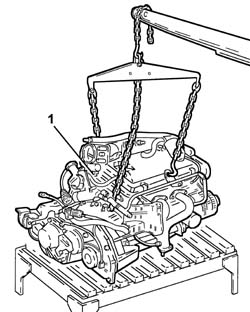
Applies to: engines: 2.5 V6; all production periods; only with equipment: Q-System
1. Release the electrical wiring from the securing band.
2. Undo the nuts (2a) and remove heat shield (2b).
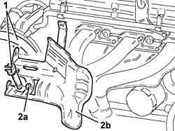
Applies to: engines: 2.5 V6; all production periods; only with equipment: Q-System
1. Undo the nuts (1a) and remove the right side exhaust manifold (1b), complete with heat shield (1c) and Lambda sensor (1d).
Remove the exhaust manifold gasket.
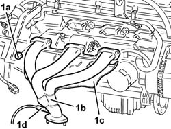
Applies to: engines: 2.5 V6; all production periods; only with equipment: Q-System
1. Undo the nuts (1a) and disconnect the electrical connections from the starter motor.
 | Name | Connector |
|---|---|---|
1b | Starter' motor |
2. Undo the bolts (2a) and remove the starter motor (2b), complete with spacer (2c).
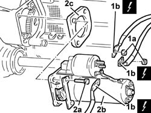
Applies to: engines: 2.5 V6; all production periods; only with equipment: Q-System
1. Undo the bolts (1a) and remove the intermediate drive shaft (1b).
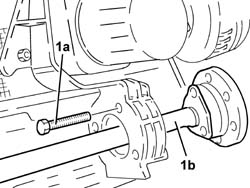
Applies to: engines: 2.5 V6; all production periods; only with equipment: Q-System
1. Undo the bolts (1a) and remove the lower engine flywheel protection (1b).
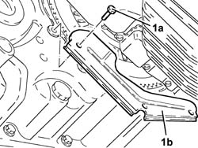
Applies to: engines: 2.5 V6; all production periods; only with equipment: Q-System
1. Undo the bolts (1a) and remove the rpm sensor protection (1b).
2. Remove the rpm sensor from its housing.
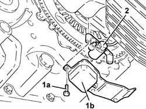
Applies to: engines: 2.5 V6; all production periods; only with equipment: Q-System
Rotate the crankshaft to gain access to the bolts securing the flywheel to the torque converter, turning the nut securing the engine pulley.
1. Fit the flywheel lock.
 | Name | Country |
|---|---|---|
1 | Counter-torque | 1.860.771.000 |
2. Undo the accessible bolts securing the flywheel to the torque converter.
Repeat the above operations for the remaining bolts and remove the flywheel lock.
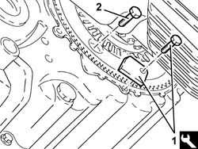
Applies to: engines: 2.5 V6; all production periods; only with equipment: Q-System
1. Position the flywheel as shown in the figure to avoid interference during fitting of the torque converter locking tool.
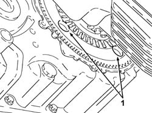
Applies to: engines: 2.5 V6; all production periods; only with equipment: Q-System
1. Fit a suitable automatic transmission mounting bracket.
2. Support the automatic transmission using a hydraulic hoist connected to the bracket fitted previously.
3. Fit the torque converter locking tool.
| Name | Country |
|---|---|---|
3 | Clip | 1.870.756.000 |
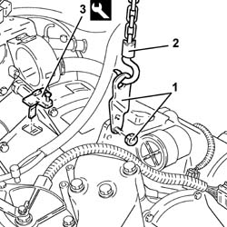
Applies to: engines: 2.5 V6; all production periods; only with equipment: Q-System
1. Undo the bolts (1a) and remove the automatic transmission (1b) from the engine using the hydraulic hoist.
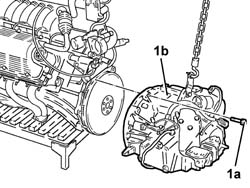
Applies to: engines: 2.5 V6; all production periods; only with equipment: Q-System
Applies to: engines: 2.5 V6; all production periods; only with equipment: Q-System
Reassembling
Dismantling1. Place the automatic transmission back in its housing using the hydraulic hoist.
2. Tighten the gearbox bolts to the specified torque.
 | Fastening | Component | Ø | Value (daNm) |
|---|---|---|---|---|
2 | Bolt | AUTO TRANSMISSION | M10 | (Engine side) 3.7 - 4.5 |
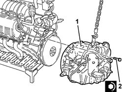
Applies to: engines: 2.5 V6; all production periods; only with equipment: Q-System
Remove the torque converter locking tool.
| Name | Country |
|---|---|---|
- | Clip | 1.870.756.000 |
Release the hydraulic hoist from the automatic transmission.
Remove the automatic transmission mounting bracket.
Rotate the crankshaft to gain access to the seats of the bolts securing the torque converter to the flywheel, turning the engine pulley nut.
1. Fit the flywheel lock.
| Name | Country |
|---|---|---|
1 | Counter-torque | 1.860.771.000 |
2. Tighten the accessible bolts securing the torque converter to the flywheel to the specified torque.
| Fastening | Component | Ø | Value (daNm) |
|---|---|---|---|---|
2 | Bolt | AUTO TRANSMISSION TORQUE CONVERTER | M8 | (Engine flywheel side) 3.0 - 3.4 |
Repeat the above operations for the remaining bolts.
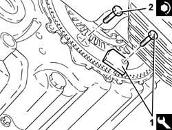
Applies to: engines: 2.5 V6; all production periods; only with equipment: Q-System
Place the rpm sensor, complete with protection, back in its housing and fix it using the bolts.
Refit the lower engine flywheel protection in its seating and fix it using the bolts.
1. Refit the intermediate drive shaft (1a) in its seating and tighten its bolts (1b) to the specified torque.
| Fastening | Component | Ø | Value (daNm) |
|---|---|---|---|---|
1b | Bolt | INTERMEDIATE DRIVE SHAFT | M8 | (Support side) 2.5 ÷ 2.8 |
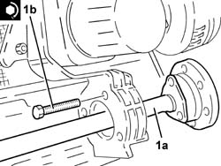
Applies to: engines: 2.5 V6; all production periods; only with equipment: Q-System
1. Place the starter motor (1a), complete with spacer (1b), back in its housing and fix it tightening the bolts (1c) to the recommended torque.
| Fastening | Component | Ø | Value (daNm) |
|---|---|---|---|---|
1c | Bolt | STARTER MOTOR | M8 | (Automatic transmission side) 2.4 ÷ 3.0 |
2. Connect the electrical connections (3a) to the starter motor and fix them using the nuts (2b).
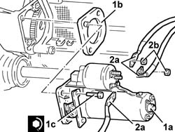
Applies to: engines: 2.5 V6; all production periods; only with equipment: Q-System
Place the exhaust manifold gaskets back in their housings.
1. Place the right side exhaust manifold (1a), complete with heat shield (1b) and Lambda sensor (1c) back in its housing and secure it tightening the nuts (1d) to the recommended torque.
| Fastening | Component | Ø | Value (daNm) |
|---|---|---|---|---|
1d | Nut | EXHAUST MANIFOLD/S | M8 | (Cylinder head side) 1.9 - 2.3 |
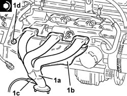
Applies to: engines: 2.5 V6; all production periods; only with equipment: Q-System
Place the heat shield back in its housing and secure it using the nuts.
Fix the electrical wiring to the securing band.
Secure the power unit using a hydraulic hoist.